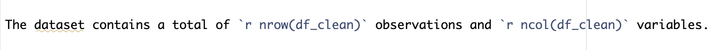

Analysis of trends in Australia’s carbon dioxide emissions and fossil fuel use based on data visualization
Author
your name or student number
1 Introduction
With the rapid development of human society, the negative impact of the greenhouse effect has gradually begun to show its power around the world, which has made more and more countries realize that it is time to curb the global warming caused by the greenhouse effect through international cooperation. Against this background, a series of international agreements such as such as the Kyoto Protocol, the Paris Agreement and the United Nations Sustainable Development Goals, which aim to slow down the trend of global warming by reducing greenhouse gas emissions, have emerged and have been signed and strictly implemented by significant countries around the world. As one of the world’s major economies, Australia has also signed the above important international agreements and has continued to fulfill its major responsibility of energy conservation and emission reduction in the following decades. This report will focus on studying and analyzing whether Australia’s energy conservation and emission reduction effects in this century are consistent with its publicity.
2 Research Question
Based on the above introduction, and considering that fossil fuel combustion is recognized as one of the main sources of greenhouse gases, and carbon dioxide is the main component of greenhouse gases, this report will mainly analyze Australia’s carbon dioxide emissions and fossil fuel use trends in this century by obtaining Australia’s per capita carbon dioxide emissions and per capita fossil fuel use data in each year of this century. At the same time, this report will also compare Australia’s carbon dioxide emissions levels before and after the signing of the Kyoto Protocol to study whether it has strictly fulfilled its emission reduction obligations as a signatory country.
3 Dataset Introduction
The data used in this report records the carbon emissions and fossil fuel use levels of major countries around the world from 1965 to 2023. The data comes from Our World in Data and includes seven variables such as “per capita carbon dioxide emissions”, “per capita fossil fuel use”, and “historical population”. For details of the variables, see Table 1. The original data has been archived in the project repository and here is the location of the data.
# Load data --------------------------------------------------------------------df <-read_csv("Data/co-emissions-per-capita-vs-fossil-fuel-consumption-per-capita.csv")# Clean data -------------------------------------------------------------------df_clean <- df |>filter(!is.na(`Annual CO₂ emissions (per capita)`)) |>filter(!is.na(`Fossil fuels per capita (kWh)`)) |>filter(!is.na(`Population (historical)`))# Create a variable table ------------------------------------------------------ variable_desc <-data_frame (Variable =c("Entity", "Code", "Year", "Annual CO2 emissions (per capita)", "Fossil fuels per capita (kWh)", "Population(historical)", "World Bank's income classification"),Description =c("Country/Region Name","ISO 3-letter Country Code","Year of Data Recording","Annual CO2 Emissions per Capita (tonnes)","Fossil Fuel Consumption per Capita (kWh)","Historical Population Estimates","World Bank Income Classification"))# Use {kable()} ----------------------------------------------------------------knitr::kable( variable_desc,col.names =c("Variable Names", "Variable Description"),align =c("l", "r"),booktabs =TRUE)
Table 1: This table contains all the variable names and corresponding descriptions in the data set selected for this report.
Variable Names
Variable Description
Entity
Country/Region Name
Code
ISO 3-letter Country Code
Year
Year of Data Recording
Annual CO2 emissions (per capita)
Annual CO2 Emissions per Capita (tonnes)
Fossil fuels per capita (kWh)
Fossil Fuel Consumption per Capita (kWh)
Population(historical)
Historical Population Estimates
World Bank’s income classification
World Bank Income Classification
3.1 Dataset Description
The dataset contains a total of 4280 observations and 7 variables.

Figure 1: Inline R code
See Figure 1 for the detail of the inline R code used.
head(df_clean,2)
Table 2: First 2 rows of the data
Entity
Code
Year
Annual CO₂ emissions (per capita)
Fossil fuels per capita (kWh)
Population (historical)
World Bank’s income classification
Africa
NA
1965
0.6665221
2100.505
321013569
NA
Africa
NA
1966
0.6725036
2136.364
329252360
NA
See Table 2 for the detail of the first 2 rows of the data and the types of variables in the dataset.
By observing Figure 2 (1), we can clearly see the trend of Australia’s carbon dioxide emissions during the research period of this report. First, during the period 2000-2007, Australia’s annual per capita carbon dioxide emissions increased slightly, but after 2007, they began to decline year by year. According to records, Australia officially signed the Kyoto Protocol in 2007 and became one of the signatories. The trend of Australia’s carbon dioxide emissions obtained from the analysis of the above figure in this report shows that Australia’s carbon dioxide emissions have been declining year by year since 2007. Therefore, it can be confirmed that Australia has strictly fulfilled its emission reduction obligations after signing the Kyoto Protocol as it promised and advertised.
By observing Figure 2 (2), we can find that the changing trend of Australia’s annual per capita fossil fuel use is basically consistent with the changing trend of annual per capita carbon dioxide emissions, also showing a trend of first increasing slightly and then starting to decline year by year. The only difference is that the turning point of the trend change came in 2008 instead of 2007.